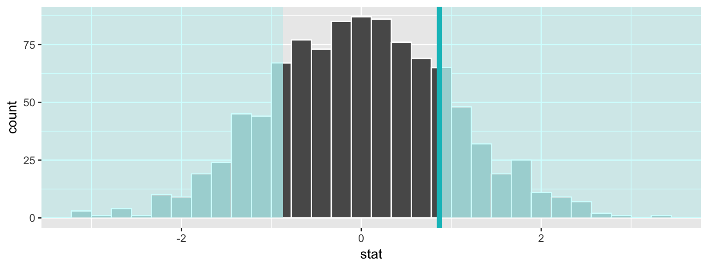
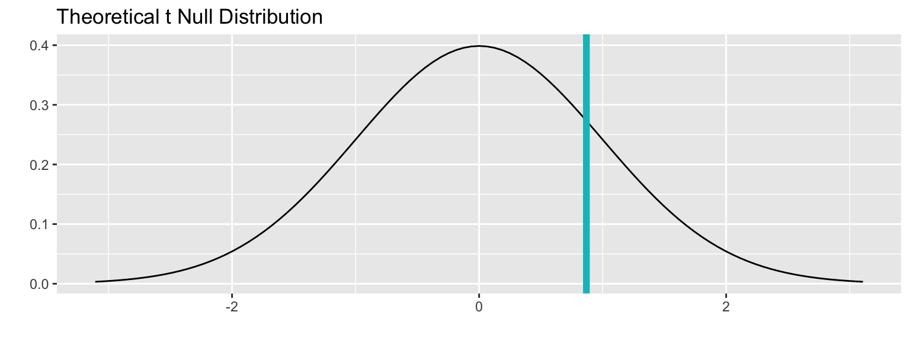

Two sample \(t\) test example using nycflights13 flights data
Chester Ismay
2017-10-19
Data preparation
library(nycflights13)
library(dplyr)
library(stringr)
library(infer)
set.seed(2017)
fli_small <- flights %>%
sample_n(size = 500) %>%
mutate(half_year = case_when(
between(month, 1, 6) ~ "h1",
between(month, 7, 12) ~ "h2"
)) %>%
mutate(day_hour = case_when(
between(hour, 1, 12) ~ "morning",
between(hour, 13, 24) ~ "not morning"
)) %>%
select(arr_delay, dep_delay, half_year,
day_hour, origin, carrier)- Two numeric -
arr_delay,dep_delay - Two categories
-
half_year("h1","h2"), -
day_hour("morning","not morning")
-
- Three categories -
origin("EWR","JFK","LGA") - Sixteen categories -
carrier
One numerical variable, one categorical (2 levels)
Calculate observed statistic
Using t_test in infer
obs_t <- fli_small %>%
t_test(formula = arr_delay ~ half_year) %>%
dplyr::select(statistic) %>%
dplyr::pull()The observed \(t\) statistic is 0.8685463.
Or using another shortcut function in infer:
obs_t <- fli_small %>%
t_stat(formula = arr_delay ~ half_year)The observed \(t\) statistic is 0.8685463.
Randomization approach to t-statistic
t_null_distn <- fli_small %>%
specify(arr_delay ~ half_year) %>% # alt: response = arr_delay, explanatory = half_year
hypothesize(null = "independence") %>%
generate(reps = 1000, type = "permute") %>%
calculate(stat = "t")
t_null_distn %>% visualize(obs_stat = obs_t, direction = "two_sided")
Theoretical distribution
fli_small %>%
specify(arr_delay ~ half_year) %>% # alt: response = arr_delay, explanatory = half_year
hypothesize(null = "independence") %>%
# calculate(stat = "t") ## Not needed since t is implied based on variable types
visualize(method = "theoretical", obs_stat = obs_t, direction = "two_sided")
Overlay appropriate \(t\) distribution on top of permuted t-statistics
fli_small %>%
specify(arr_delay ~ half_year) %>% # alt: response = arr_delay, explanatory = half_year
hypothesize(null = "independence") %>%
generate(reps = 1000, type = "permute") %>%
calculate(stat = "t") %>%
visualize(method = "both", obs_stat = obs_t, direction = "two_sided")